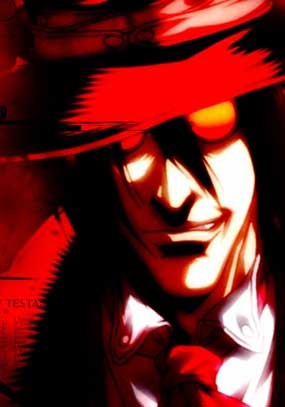

Forums galactiques > Assemblée Galactique : diplomatie officielle > Dark Ghozer !
Pages : 1 2
| Ny le Tueur d'Ombre Respect diplomatique : 27  07/05 ETU 20:21 | Score : 4 Détails Après avoir converser avec lui par Messages Privés, j'en suis venu à la conclision qu'Il était bon. Et non, Il m'a pris ma seule planète, furtivement, avec des kamikazes. Ce Dark "Ghozer" (il ne mérite pas le nom de Ghozer)m'a bien eu. Certes, je vais peut-être être traité de "pleurnichard", et d'autres choses pas agréables à entendre, et je ne demande pas votre aide, je veux juste êtres sûr que vous soyiez au courant de sa perfidie.
Merci, Ny le Tueur d'Ombre et peut-être aussi du Faux Ghozer. | ||
| Kyle Emagan Respect diplomatique : 1309  07/05 ETU 20:25 | Score : 2 Détails Pleurnichard va!
| ||
| Général_Louis Respect diplomatique : 1323  07/05 ETU 20:26 | Score : 2 Détails Comment Dark Ghozer pourrait vous attaquez? Réfléchissez, ce doit être une erreur, à moi que votre tête ne lui revienne pas.
En tout cas, si vous l'attaquez, je le défendrai coute que coute, car c'est un ami et un gars de ma coalition. | ||
| Ny le Tueur d'Ombre Respect diplomatique : 27 07/05 ETU 20:28 | Score : 1 Détails Et oui il m'a attqaué, dès le soir où je suis arrivé dans cette Galaxie il a lancé une attaque. On m'avait dit que je serais bien reçut, si je venais faire partager mes problèmes. Il semble que ce soit des mensonges.
| ||
| Booster Respect diplomatique : 1494  07/05 ETU 20:29  | Score : 2 Détails Ce ne sont pas des mensonges, vous êtes tout simplement tombé sur la mauvaise personne...
Vous avez encore des biens matériels, commandant ? | ||
| Ny le Tueur d'Ombre Respect diplomatique : 27 07/05 ETU 20:33 | Score : 1 Détails Il y a des laches partout,je n'aurais pas dû l'oublier...
| ||
| Parisii Respect diplomatique : 1721  07/05 ETU 20:38 | Score : 3 Détails Bien, évidemment que Dark "Ghozer" est mauvais, c'est l'anté-Ghozer.
Donc, il n'y a aucune surprise la dedans cher Louis. Commandant Ny, pourriez vous me donner par mp le lieu ou ce Dark Ghozer vous a fait offense, que je vous aide à réintégrer votre bien. Par ailleurs, ce dark ghozer m'a déjà quelques peu ennuyé, ce sera donc à la fois professionnel et personnel. | ||
| Général_Louis Respect diplomatique : 1323 07/05 ETU 20:40 | Score : 0 Détails ATtendez, j'ai uen preuve irréfutable que Ny Ment, jetez un oeil sur ce MP:
1er message de Ny: Expéditeur Ny le Tueur d'Ombre Destinataire Dark Ghozer Date d'envoi 7/05 ETU 20:14 Sujet Systeme Message Mon pauvre si tu crois m'avoir comme ça. HAHAHA ! N'est-ce pas une preuve que ce Ny est un menteur? Si il envoit un tel MP, c'est qu'il faisait la guerre, c'est juste une personne qui pleure car elle pert la guerre. Donc je dis que Ny est quelqu'un qui ne met pas de preuve, et sans preuve, il en peut avoir raison, sauf que moi j'ai la preuve irréfutable que Ny attaquait Dark Ghozer. | ||
| Booster Respect diplomatique : 1494 07/05 ETU 20:43 | Score : 1 Détails Excusez-moi Louis, mais il me semble que votre message apporte au contraire des éléments soutenant la théorie de l'attaque de Dark Ghozer...
"Mon pauvre si tu crois m'avoir comme ça" Si cela ne veut pas dire que Dark Ghozer ne l'avait pas attaqué, ou du moins menacé auparavant... Votre preuve joue contre vous, Louis. | ||
| Ny le Tueur d'Ombre Respect diplomatique : 27 07/05 ETU 20:45 | Score : 0 Détails Je n'ai pas dit que je voulais de l'aide. j'ai dit que je voulais dénoncer Dark Ghozer. Et oui, j'ai envoyé ce MP, car j'ai (un peu) de soutiens. mais il est facile de faire ca, moi aussi je peux inviter un Mp, mais si là, ce n'est pas le cas. je ne vous demande pas de me croire Général_Louis, j'avoue que j'en ai fichtrement rien à faire. ce n'est pas avec 8 croiseurs légers et 40 chasseurs bombardiers que je vais d'ailleur partir en guerre.
| ||
| Dye Respect diplomatique : 12  07/05 ETU 20:45 | Score : 2 Détails Cher commandant je ne met pas en doute votre parole mais il est facile de créer des MP. Je pense que le mieux est de laisser ce différent se régler diplomatiquement et sans effusions de sang. Le recours aux armes et à la course aux preuves n'est pas solution à un conflit.
| ||
| Général_Louis Respect diplomatique : 1323 07/05 ETU 20:46 | Score : 0 Détails Réfléchissez un instant, si Ny le tueur d'ombre vous avez menacé, vous étant plus fort l'aurait menacé à votre tour, donc après il croit qu'il est plus fort et il répond irroniquement.
Donc je dirai que c'est Ny qui a lancé la guerre. EDIT: Créé un MP avec une heure précise et sans fautes? Il serait impossible que Dark Ghozer fasse celà car il fait des fautes. | ||
| Ny le Tueur d'Ombre Respect diplomatique : 27 07/05 ETU 20:47 | Score : 0 Détails Dites ce que vous voulez, Louis. Mais je sais qu'on me croit. pas toute le monde, évidemment mais la plupart. Et Dark Ghozer lui-même sait qui a raison.
| ||
| Ny le Tueur d'Ombre Respect diplomatique : 27 07/05 ETU 20:50 | Score : 3 Détails Et voilà en plus ce que m'a dit Dark Ghozer hier :
"Expéditeur : Dark Ghozer Destinataire : Ny le Tueur d'Ombre Date d'envoi : 6/05 ETU 21:19 Sujet : Re: Systeme Message : Je vais te dire qui n'est pas gentil ou réagir quand on voit ce type dans un systeme: Ariel Golleport Pigeon Sether La coalition Utopia " Mais avant cela il m'a dit : "Salut, je tiens à te dire que si tu attaque moi et Ionion ou que tu fait un faux pas je t'extermine." j'ai répondu : "Salut, je tiens à te dire que si tu es aussi violant que tu en as l'air, je te demande de calmer ta joie. Je vais pas vous toucher je ne suis pas fou. Par contre me cherche pas trop stp. je veux pas d'ennuis avec des gars dans ton genre." Voyez comme il est facile de remonter au début des menaces. | ||
| Kumano Respect diplomatique : 11  07/05 ETU 21:03 | Score : 0 Détails Envoyez moi un Mp avec la flotte que vous aurez besoin et je vous la fournirai dans les plus brefs delai
| ||
| Booster Respect diplomatique : 1494 07/05 ETU 21:08 | Score : 1 Détails Il demeure un problème, le système de ces commandants est fermé ; pour l'instant, le commandant Ny ne peut recevoir d'aide extérieure et Dark Ghozer demeure en sûreté.
| ||
| Rune Haako Respect diplomatique : 8 07/05 ETU 21:12 | Score : 1 Détails Il peut recevoir toute l'aide qu'il désire, car quand son système est fermé, il ne peut pas envoyez de ressources. Par contre, il peut en recevoir. Cela marche aussi avec les unité militaire.....
| ||
| Booster Respect diplomatique : 1494 07/05 ETU 21:13 | Score : 0 Détails Mais il ne peut recevoir de planètes...
| ||
| Sullïwan Respect diplomatique : 1097  07/05 ETU 21:15 | Score : 4 Détails Les diplomates deviennent déjà inutiles...
Peut-être les Commandants ont-ils oubliés leurs rôles ? | ||
| Rune Haako Respect diplomatique : 8 07/05 ETU 21:16 | Score : 2 Détails Bien évidemment, mais l'aide qui lui a été proposée, c'était une aide en ressources et non en planètes...
Sulliwan : Peut-etre n'ont-ils pas étaient prévenu de cette affaire. Si on veut recevoir de l'aide, il faut absolument les contacter. Mais quand vous ne serez plus de ce monde, nous seront bien content de voir que plus personne cherche la petite bete. Parce que en parlant de bete, j'en voit une grosse dans votre projet "Utopia". Mais bon, ce n'est ni le moment ni l'endroit.... |
Pages : 1 2
Forums galactiques > Assemblée Galactique : diplomatie officielle > Dark Ghozer !